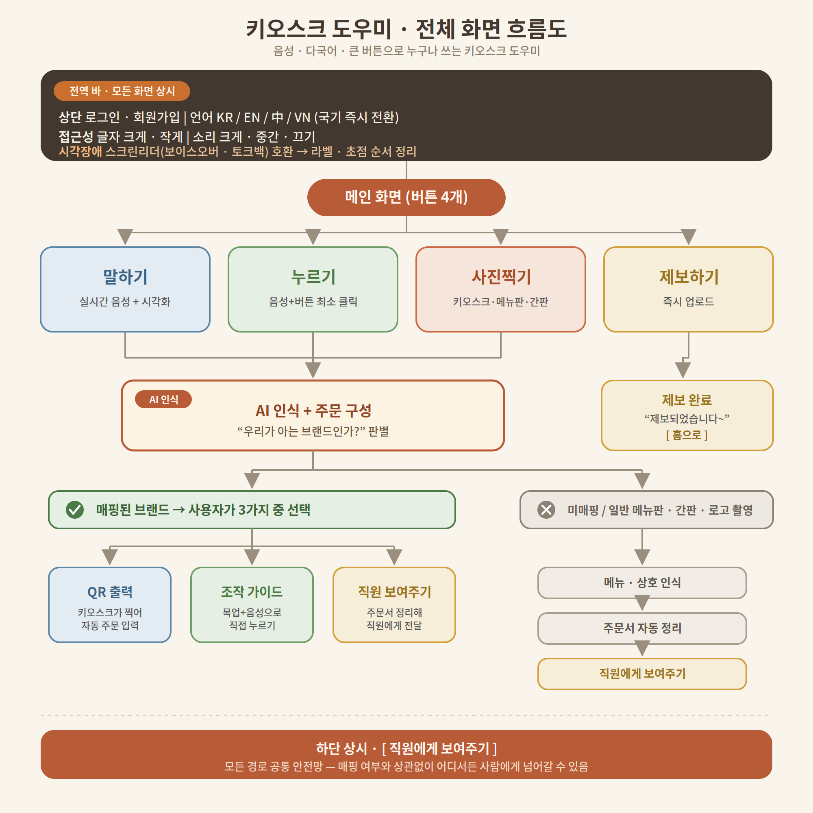

키오스크 주문을 혼자 마치도록 돕는 배리어프리 도우미.
어르신·외국인·시각장애인이 사진·음성·큰 버튼으로 주문합니다
외국인·고령자·시각장애인·어린이가 사진·음성·버튼으로 키오스크 주문을 혼자 끝낼 수 있게 돕는 서비스입니다.
화면 인식, AI 체인, 규칙 기반 폴백, 접근성 구현을
담당.
2박 3일 일정으로 개발, 아이디어상 수상 및 팀 내 투표 MVP 선정.
핵심 사용자는 낯선 키오스크 앞에서 첫 조작을 시작하지 못하는 이용자로 정의했습니다.
대표 페르소나는 베트남 출신 28세 근로자입니다.
같은 설계가 고령자·시각장애인·어린이에게도 그대로 적용됩니다.
요구사항 정의서·기능 정의서·테이블/API 정의서·WBS로 문서화했습니다.
말하기·누르기·사진 촬영·제보 네 가지 입력이 모두 AI 인식과 주문 구성 단계로 모입니다.
브랜드가 매핑된 경우 QR을 출력하고, 미매핑인 경우 조작 가이드를 제공합니다.
모든 경로에서 화면 하단에 "직원에게 보여주기" 버튼이 상시 노출됩니다.

사진을 base64로 전송하면 모델이 메뉴명·가격·버튼 색·버튼 위치를 JSON으로 반환.
프롬프트에 Do not invent items. 명시. 불확실한 값은
null로 수신.
운영은 kiosk.ai.provider=mindlogic 게이트웨이, 로컬은 ollama(llava). 설정 한 줄로 전환.
AI가 없어도 데모가 끝까지 진행되도록 mock 프로바이더 준비.
모델 순서는 kiosk.ai.models 설정에 정의. 첫 성공 응답을 채택.
빠르게 판단만 하면 되는 좁혀가기 질문은
fast-models를 먼저 호출합니다.
전부 실패하면 규칙 기반(DB·사전) 폴백으로 내려갑니다.
Result(content, reachable) 2필드로 모델 거절과 네트워크 단절을 구분.
거절이면 다음 모델, reachable=false면 체인 즉시 중단 후 규칙 기반 전환.
망 장애 시 모델 3개 불필요 호출 방지.
KR/EN/中/VN 등 국기 즉시 전환, 글자·소리 크기 조절,
화면 아무 곳 5초 꾹 → 시각장애 음성 모드.
매핑 여부와 상관없이 어디서든 주문서를 정리해
직원에게 넘기는 공통 경로.
com.jingdari.omong을 controller · service · dto · model로 나눴습니다.
AI 호출은 프로바이더 인터페이스로 감싸, 실패하면 다음 단계로 내려가도록 설계했습니다.
비전 모델·LLM 지연 시 시연 도중 화면 정지 위험.
AI 응답에만 의존하는 단일 경로.
프로바이더를 mock으로 두면 0단계 DB·사전 폴백만으로 화면읽기·번역 동작. AI 없이도 전체 흐름 시연 가능.
매핑되지 않은 키오스크에서 주문 자동 구성 실패.
모든 브랜드의 사전 매핑은 불가능.
브랜드를 몰라도 일반 메뉴판으로 인식. 모든 경로에 "직원에게 보여주기" 상시 노출로 직원에게 넘김.
음성 모드에서 마이크 권한이 막히면 입력 자체가 불가.
브라우저 권한 상태를 확인하거나 안내하는 처리가 없음.
권한 상태 로그 점검 후 음성 안내 흐름 보완. 권한 거부 시 버튼 입력으로 대신하도록 안내.
망이 끊긴 상황에서도 모델 3개를 순차 호출. 규칙 폴백까지 도달하는 데 지연 누적.
호출 실패를 한 종류로만 처리. 모델이 거절한 경우와 게이트웨이에 닿지 못한 경우가 동일 취급.
MindLogicClient 반환을 Result(content, reachable) 2필드로 분리. 거절이면 다음 모델, reachable=false면 체인 즉시 중단 후 규칙 기반으로 전환.
AI 폴백 후 규칙 기반 추천에서 결과가 0건이 되면 화면에 아무것도 표시되지 않음.
RuleEngine의 drink·taste 2축 조건을 모두 만족하는 메뉴가 없는 경우 존재.
필터 결과가 비면 전체 후보로 복귀. 화면이 비는 상황 자체를 제거.
2박 3일 해커톤 일정으로, 심사 시간에 서비스가 정상 동작하는 것을 최우선 목표로 두었습니다.
테스트 코드를 늘리는 대신 AI 호출이 실패해도 화면이 멈추지 않는 경로를 코드로 확보했습니다.
server.port=${SERVER_PORT:8081}. EC2 보안그룹 인바운드에 해당 포트를 열어 두는 것을 설정 주석으로 남겼습니다${KEY:기본값} 꼴로 잡아 로컬과 서버가 같은 빌드로 돌아갑니다spring.profiles.include=secret으로 키 파일을 본 설정에서 떼어 냈습니다컨텍스트 로딩 확인용 OmongApplicationTests 1건.
3일 일정에서는 테스트를 늘리는 대신, 실패해도 데모가 끝까지 가는 경로 확보를 우선.
화면 인식은 AI · 시드된 키오스크 DB · 재촬영 안내 3단.
메뉴 추천은 AI 체인 실패 시 RuleEngine.
규칙 필터 결과가 0건이면 전체 후보로 복귀해 빈 화면 방지.
해커톤 수상 내용이 언론에 보도됐습니다.